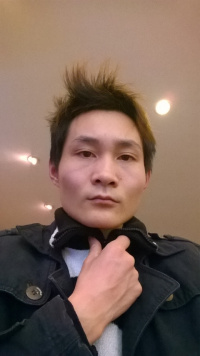

|
蘑菇品种：枣壳菇
本条目人物是2012出道的古代蘑菇。 |
赵健（1991.2.25 -），安徽无为人，自称现居北京。暴力膜迈人，化名赵克逊、骚克逊，3ds吧著名咸猪手，曾上《非你莫属》、《非诚勿扰》等电视节目炒作他的“三个大”理论。
| 赵健 | |
|---|---|
 托塔天王赵克逊 | |
|
姓名 |
赵健 |
|
常用ID |
骚克逊 |
|
职业 |
花店店主 |
|
能力 |
黑喷 |
|
特长 |
跳太空步 |
|
必杀技 |
男人三个大 |
|
硬度 |
★★★ |
|
所属 |
网哲 |
可能是最早（2012-2013年）自爆牛子的人。
目录
相关信息
主要理论
- 现在的80后、90后女孩都喜欢“三个大”男人：长得大（长得高或吨位大）、资金大（富二代）、本事大（只有上流社会才能本事大），自己是“三个小”，没有女人、工作单位要他。
- 迈克尔·杰克逊舞蹈的精髓是“愤怒”，不“愤怒”的人是跳不好他的舞的。
网哲历程
2014年中，罗玉凤吧的经纪人发现赵克逊在贴吧活动。由于此人思维魔怔、互动性较强、而且为了出名的企图甚至会主动公布个人隐私，于是恶俗系开始和赵克逊在贴吧上接触互动，尝试对他进行网哲化包装炒作。
在互动的过程中，赵克逊对罗玉凤吧高雅人士颇为不满，金句频出。更令人不堪入目的是，赵克逊的亲爹赵大龙也亲自上贴吧和网友对喷，乃至和赵克逊一起录视频自我炒作（目前在百度仍能搜索到），和谯鉴、谯德才这对父子一样，是古典恶俗的两对上阵父子兵之一。而赵克逊和杨帆在思维和行为上有一些相似之处，所以赵克逊一度和杨帆被并列和比较，成为恶俗系关注的两大首要网哲之一。
随着互动的深入，恶俗人士逐渐发现赵克逊实际上盈利心切，此前种种魔怔语言和行为皆是为了以丑出名的装疯卖傻，对他进行恶俗炒作反倒会帮他出名获利，加之赵克逊在公众面前已经彻底过气，遂迅速冷落了他。2015年中，罗玉凤吧有经纪人发帖《四大啃老网哲》，列举了杨帆、张杰、林淏泽、于志成这四人，唯独把赵克逊排除在外，标志着赵克逊已然被恶俗人士抛弃。从2014年中赵克逊被经纪人发掘，到2015年中被抛弃，赵克逊俨然是火的最快也摔得最惨的恶俗明星。从此，“恶俗系不帮人出名获利”这一原则也成为恶俗系内的共识。
电视炒作
- 赵健上《非你莫属》：《非你莫属》 20130513 24:50左右
- 赵健上《非诚勿扰》：非诚勿扰-20140223-翻版张亮惹众女发花痴 03:52左右
与杨帆的互动
杨帆评价赵健
《大脑升级人》之赵克逊，我觉得你的说的“三个大”完全是一种丛林法则。
也就是谁最大最强势谁就是老大，你的“三个大”把一个人长得帅和美当做大，你把一个人资金有钱当成炫耀大有钱人，你把一人有本事有才当成是一种大，总之你把一切都用“大”来看待。
其实你的“三个大”理论是被网友发掘的，从你在电视节目里面对三个的大语气来看，你骨子是信仰“三个小”并且仇恨“三个大'的，你骨子里就是自卑的基因，就像懦夫仇恨暴力一样，就像兔子害怕棕熊一样。
你现在到处宣扬什么被网友放大的“三个大”，其实你骨子力就一个自卑的人，顶多自大，并非你口中和网友口中的“三个大”强势人，你骨子里就胆小。
你说你喜欢迈克尔杰克逊，还说要成为天新王但是从是视频中完全没看出你有跳舞的才华，可以反应出你自大的本性。
你说你不喜欢骂人的人，你说你是有素质的，其实那些骂人的并非一定就是邪恶骂人，有可能是正义骂人，反而你口中的你不喜欢骂人和你有素质，仅仅只是一种奴性的“伪善”和“伪和平”。
其实迈克尔杰克逊的音乐和思想宣传的就是一种“伪和平”，他反对任何形式的战争，也就是连正义的战争也反对，可见他是一个懦夫，连喜欢战争的人都不如。这点，你赵克逊和他有共同点，也难怪你把他当偶像，也难怪有这么多懦夫喜欢把他当偶像。
其实你的“三个大”，什么长得大、资金大、本事大，这些词本来就是模糊概念，如果这个“大”被强势人理解成丛林法则，当有人野蛮人崇拜你时，那么你就把这些强势人骗了，如果你的这个“大”被文明人理解成褒义的，当文明人崇拜你时，那么你就把文明人骗了。
希特勒也喜欢大，残暴的恐龙也喜欢大，野蛮人喜欢大，很大，更大，这是他们的特性。 野蛮人看待事物就是表面的大，以为大就是强和就是好，因为他们的智商只能意识到这个点上，他们意识不到事物内部的精细结构才是根本。
总之，无论赵克逊是仇恨三个大的自卑的人还是宣扬三个大强势的人，他都是野蛮人。
转载请注明作者“独人13”谢谢
赵健评价杨帆
原视频：骚克逊吐评独人13野蛮人理论，以下为笔者听写：
大家好，我是这个赵克逊，今天，大家好，我是这个赵克逊，今天做这个视频的目的呢是想告诉大家：创人呐、独人呐这一条长得小的猪的就是一条猪，长得特别小，三个小，资金小，长得小，长得特别猥琐，整天呢录一些没用的东西发到网上，说人类是野蛮人。
人类自从进入了文明社会，根本就没有野蛮和文明人之处了。我知道人类在养你这头猪的时候的劲头（？）多大你说你觉得这些猪是野蛮人。而那些按时喂养你食物的人，你就会觉得这些人不是野蛮人。自从陷入自由宪法公布过后废除了奴隶制度连黑人都……
轶事
赵健曾要求3DS汉化吧汉化组将《塞尔达传说：众神的三角力量2》中主人公的默认名“林克”改为“赵克逊”，惨遭众人嘲讽。